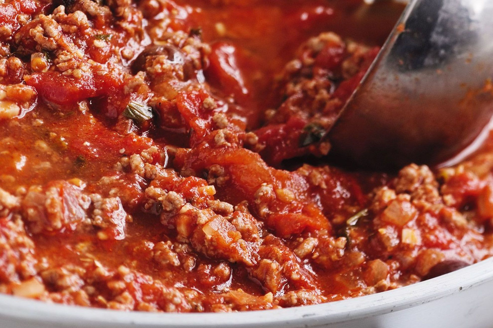

What's our secret to our best lasagne recipe?
This amazing lasagne recipe, with its rich tomato sauce, is an absolute favourite among the USA, but don’t just take There word for it: our members are raving about it too. One reviewer even said she made it for her husband “who grew up eating lasagna his Italian mother cooked him” (no pressure!) and “he thoroughly enjoyed” it. Fewf (wipes brow). With a 4.5-star rating and multiple rave reviews, it’s safe to say this recipe is now an adopted Aussie classic.
How to make our best lasagne: get the full recipe below
Ingredients
- 2 tsp olive oil
- 1 brown onion, halved, finely chopped
- 2 garlic cloves, crushed
- 750g Coles Finest Carbon Neutral Beef Mince
- 2 x 400g cans Italian diced tomatoes
- 125ml (1/2 cup) dry red wine
- 55g (1/4 cup) tomato paste
- Salt and freshly ground black pepper
- Olive oil, extra, to grease
- 4 fresh lasagne sheets
- 55g (1/2 cup) coarsely grated mozzarella
- Mixed salad leaves, to serve
Cheese Sauce
- 1L (4 cups) milk
- 1 brown onion, halved, coarsely chopped
- 8 fresh parsley stalks
- 8 whole black peppercorns
- 4 whole cloves
- 2 bay leaves
- 60g butter
- 50g (1/3 cup) plain flour
- 70g (1 cup) finely grated parmesan
- Pinch ground nutmeg
- Pinch ground nutmeg
Method
Step 1
Heat the 2 tsp olive oil in a large frying pan over medium heat. Add the 1 brown onion, halved, finely chopped and 2 garlic cloves, crushed and cook, stirring, for 5 minutes or until onion softens. Add the 750g Carbon Neutral Beef Mince and cook, stirring with a wooden spoon to break up any lumps, for 5 minutes or until mince changes colour. Add the 2 x 400g cans Italian diced tomatoes, 125ml (1/2 cup) dry red wine and 55g (1/4 cup) tomato paste, and bring to the boil. Reduce heat to low. Simmer, uncovered, stirring occasionally, for 30 minutes or until sauce thickens slightly. Remove from heat. Taste and season with Salt and freshly ground black pepper.
Step 2
Meanwhile, to make the cheese sauce, combine the 1L (4 cups) milk, 1 brown onion, halved, coarsely chopped , 8 fresh parsley stalks, 8 whole black peppercorns, 4 whole cloves and 2 bay leaves in a medium saucepan and bring to a simmer over medium heat. Remove from heat and set aside for 15 minutes to infuse.
Step 3
Strain the milk mixture through a fine sieve into a large jug. Discard solids.
Step 4
Melt the 60g butter in a large saucepan over medium-high heat until foaming. Add the 50g (1/3 cup) plain flour and cook, stirring, for 1-2 minutes or until mixture bubbles and begins to come away from the side of the pan. Remove from heat.
Step 5
Gradually pour in half the milk, whisking constantly with a balloon whisk, until mixture is smooth. Gradually add the remaining milk, whisking until smooth and combined.
Step 6
Place saucepan over medium-high heat and bring to the boil, stirring constantly with a wooden spoon, for 5 minutes or until sauce thickens and coats the back of the spoon. Remove from heat. Add the 70g (1 cup) finely grated parmesan and stir until cheese melts. Taste and season with Pinch ground nutmeg, Salt and white pepper.
Step 7
Preheat oven to 180°C. Brush a rectangular 3L (12 cup) capacity ovenproof dish with oil to lightly grease. Spread one-quarter of the bechamel sauce over the base of the prepared dish. Arrange one of the 4 fresh lasagne sheets over the sauce. Top with one-third of the mince mixture and one-third of the remaining bechamel sauce. Continue layering with the remaining lasagne sheets, mince mixture and bechamel, finishing with a layer of bechamel. Sprinkle with 55g (1/2 cup) coarsely grated mozzarella. Place on a baking tray. Bake in preheated oven for 40 minutes or until cheese melts, is golden brown, and the edges are bubbling. Remove from oven and set aside for 10 minutes to set.
Step 8
Cut the lasagne into 8 portions and serve with Mixed salad leaves, to serve.